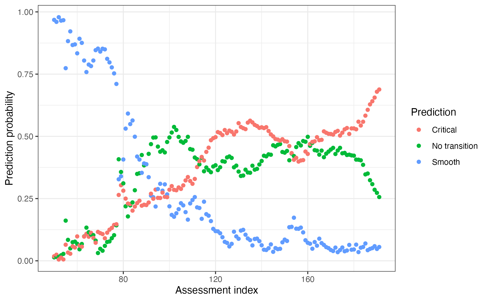

About this tutorial
This tutorial introduces how to interface with EWSNet, a machine learning model trained to predict critical transitions, tipping points, and regime shifts (Deb et al. 2022). We will only focus on how to set up your R session to interact with EWSNet and how to interpret the output rather than the theory and mathematics underlying the model. If you are interest in those details, please refer to the EWSNet specific website and documentation or the associated publication.
NOTE This version of EWSNet differs from that published by Deb et al. (2022) in that is has been retrained using a range of time series lengths (minimum = 15). This improves the accuracy of EWSNet over a range of time series lengths but we recommend that the minimum length to be tested should be 15 data points.
Getting started
As EWSNet has been written and developed in Python, for R to interact
with it, we need to exploit the reticulate R package.
reticulate provides the tools to run Python code in R and
transfer objects between the two languages but tends to run much
smoother in RStudio rather than base R. It is therefore recommended that
you use the RStudio
IDE when using the EWSNet portion of EWSmethods.
The following sections will show how to setup and run EWSNet in
EWSmethods before troubleshooting a few common errors
stemming from the Python-reticulate-R interface.
1. Initialising EWSNet
Rather than requiring the user to learn reticulate and
setup the R session themselves, EWSmethods provides a
single function capable of checking your machine for Python, installing
it if it’s not found (along with the critical packages), creating a new
Python environment to hold these packages, and then activating that
environment when ready. To prevent the user accidentally installing
Python or packages, the function does require confirmation inputs from
the user and so needs to be run at the start of any new R
session.
For example, to create a new Python environment called
"EWSNET_env" and install Python, the function would be
written as below. The environment name ("EWSNET_env") will
be critical to running the later functions.
#prepares your session using 'reticulate' and asks to install Anaconda (if no appropriate Python found) and/or a Python environment before activating that environment with the necessary Python packages
ewsnet_init(envname = "EWSNET_env", pip_ignore_installed = FALSE, conda_refresh = FALSE)If successful, you will have had to input "y" to allow
EWSmethods to download and activate the Python environment
and now see the message
"EWSNET_env successfully found and activated. Necessary Python packages installed").
If not, please refer to the Troubleshooting section at the end of the
tutorial.
To double check the environment activation, you could use
reticulate functions to check first what environment is
active and second what Python packages have been loaded:
library(reticulate)
#print which Python environment `EWSmethods` is using
reticulate::py_config()
#> python: /usr/share/miniconda/envs/EWSNET_env/bin/python
#> libpython: /usr/share/miniconda/envs/EWSNET_env/lib/libpython3.8.so
#> pythonhome: /usr/share/miniconda/envs/EWSNET_env:/usr/share/miniconda/envs/EWSNET_env
#> version: 3.8.16 (default, Mar 2 2023, 03:21:46) [GCC 11.2.0]
#> numpy: /usr/share/miniconda/envs/EWSNET_env/lib/python3.8/site-packages/numpy
#> numpy_version: 1.23.5
#>
#> NOTE: Python version was forced by use_python function
#list all packages currently loaded in to "EWSNET_env"
py_packages <- reticulate::py_list_packages()
head(py_packages)
#> package version requirement channel
#> 1 _libgcc_mutex 0.1 _libgcc_mutex=0.1 pkgs/main
#> 2 _openmp_mutex 5.1 _openmp_mutex=5.1 pkgs/main
#> 3 absl-py 1.4.0 absl-py=1.4.0 pypi
#> 4 alabaster 0.7.13 alabaster=0.7.13 pypi
#> 5 astunparse 1.6.3 astunparse=1.6.3 pypi
#> 6 babel 2.12.1 babel=2.12.1 pypiEWSmethods also does not come bundled with the necessary
model weights to make predictions. This is due the size of the weight
files being ~220 MB which is not appropriate for all users of the
package. To download these weights, we can use the
ewsnet_reset() function which can either remove
no-longer-needed weights or re/download from https://ewsnet.github.io.
ewsnet_reset(remove_weights = FALSE)If successful, you will have had to input "y" to allow
EWSmethods to download the pretrained weights.
2. Predictions from EWSNet
To give an example on how to use ewsnet_predict() we
need some test data. Here, we will use some random noise around a mean
of 0 which we expect to be predicted as
"No Transition".
data("simTransComms")
pre_simTransComms <- subset(simTransComms$community1,time < inflection_pt)
plot(pre_simTransComms[,3], xlab = "Year", ylab = "Density")We then simply provide this vector to ewsnet_predict()
while also specifying the Python environment, the scaling of the data
and ensemble number (how many models to average the prediction
over).
ewsnet_prediction <- ewsnet_predict(pre_simTransComms[,3], scaling = TRUE, ensemble = 25, envname = "EWSNET_env")
ewsnet_prediction
#> pred no_trans_prob smooth_trans_prob critical_trans_prob
#> 1 Critical Transition 0.26739 0.04719289 0.6854172Interpreting EWSNet
As with any machine learning model, interpreting prediction probabilities is difficult. In EWSNet’s case, as three possible predictions can be made - No transition, Smooth transition, Critical transition - a chance prediction is one that is approximately 0.33 (1.0 divided by 3 is ~0.33).
Therefore any probability greater than 0.33 implies a stronger than chance prediction and anything greater than 0.6 warrants serious scrutiny.
Similarly, the real world manifestation of a Smooth or Critical
transition is unclear (Kefi et al 2013, Gsell et al
2016). EWSNet therefore considers a "Smooth Transition"
prediction to indicate a directional trend in the system whereas a
"Critical Transition" indicates a rapid non-linear change.
A "No Transition" prediction consequently suggests a stable
period.
The below figure visually depicts the models that have been used to train these predictions and how those predictions relate to time series data.
Conceptual diagram of A) the type of transitions that EWSNet has been trained on and B) how those transitons can appear in real time series data
Predictions through time
An additional way to use EWSNet is to explore how predictions change through time. By iteratively adding in new data, we can see how those predictions evolve.
For example, using our test data, we could use this code to identify transitions that may have happened in the past:
#define the range of indexes to test over
expanding_range <- 50:length(pre_simTransComms[,3])
#pre-define our out file
expanding_ewsnet <- data.frame(expanding_range, matrix(NA,ncol=3 )) |>
`colnames<-`(c("cutoff_ind","No transition",'Smooth','Critical'))
#call `ewsnet_predict()` for each index
for(i in seq_along(expanding_range)){
ews.tmp <- ewsnet_predict(pre_simTransComms[1:expanding_range[i],3],scaling = TRUE, ensemble = 25, envname = "EWSNET_env")
expanding_ewsnet[i,] <- c(expanding_range[i],ews.tmp$no_trans_prob,ews.tmp$smooth_trans_prob,ews.tmp$critical_trans_prob)
}
#plot the results
ggplot(expanding_ewsnet |> pivot_longer(-cutoff_ind,names_to = "Prediction",values_to = "prob"),
aes(x=cutoff_ind,y=prob)) +
geom_point(aes(col=Prediction)) + theme_bw() +
xlab("Assessment index") + ylab("Prediction probability") Here we see how prediction probabilities fluctuate with new data, with the trends in probabilities also providing information on how the system has changed over time.
3. Finetuning EWSNet
In the circumstance where training data is available, it may be preferable to finetune EWSNet. Finetuning alters the EWSNet model weights based upon the training data in an attempt to improve predictions. For example, the user could simulate their own collapsing time series of the same length as their test data. EWSNet would then be tuned to identify features specific to the time series of interest.
An example is given below using a mock data set matched to the same
length of pre_simTransComms - 191 data points.
x <- matrix(nrow = length(pre_simTransComms[,3]), ncol = 10)
x <- sapply(1:dim(x)[2], function(i){
x[,i] <- rnorm(length(pre_simTransComms[,3]),mean=20,sd=10)})
# create dummy data
y <- sample(0:2,10,replace = TRUE)
# create labels. 0 = no transition, 1 = smooth transition, 2 = critical transition
ewsnet_finetune(x = x, y = y, scaling = TRUE, envname = "EWSNET_env")Each of the 25 scaled model weights have resultingly been finetuned
based upon the new training data. Calling
ewsnet_predict(scaling = T) will therefore use these new
weights.
In this example, as the training data has been randomly generated, the prediction quality will decrease, however it goes to show how weights can be updated/improved if new data comes available.
4. Resetting EWSNet
Following finetuning, it may be desirable to reset the model weights
to their default. Using the ewsnet_reset() function, the
user can direct EWSmethods to the path of the default
weights (these can be redownloaded from the EWSNet github) which will
overwrite the current model weights stored by
EWSmethods.
ewsnet_reset(remove_weights = FALSE) You may want to remove Python downloads and environment setup by
EWSmethods and/or any downloaded EWSNet weights. You can
achieve this using ewsnet_init() and the
conda_refresh = argument, and ewsnet_reset()
respectively.
ewsnet_init(envname = "EWSNET_env",conda_refresh = TRUE) # removes Python, its packages and the "EWSNET_env" environment
ewsnet_reset(remove_weights = TRUE) # removes any downloaded EWSNet weightsQuick reference
| Function name | Purpose |
|---|---|
ewsnet_init() |
Prepares the session to interface with Python. Critical first step |
ewsnet_predict() |
Using the Python environment initialised by
ewsnet_init(), builds the EWSNet model and makes
predictions from the user supplied time series |
ewsnet_finetune() |
Retrains the initial EWSNet model weights based upon new user provided training data |
ewsnet_reset() |
Overwrites the model weights with the default weights downloaded from EWSNet github |
Greater detail on each function can be found at the Reference page.
Troubleshooting
1. reticulate is activating a different environment
to the one I gave to ewsnet_init()
This is the main error when using EWSmethods. The first
solution is to simply restart the R session and rerun
ewsnet_init(). If reticulate is loaded before
ewsnet_init() is run, then the default
reticulate environment "r-reticulate" is
activated instead of your EWSNet environment. Therefore ensure no
reticulate command or library(reticulate) is
run prior to ewsnet_init().
If the error remains and your RStudio version is >=1.4, you may
need to edit your Python interpreter settings in RStudio’s preferences.
Go to Preferences -> Python and untick “Automatically activate
project-level Python environments”. Then restart your R session and
rerun ewsnet_init().
The final solution we are aware of involves deactivating
reticulate’s default behaviour in your global R environment
settings. Running bypass_reticulate_autoinit() will disable
reticulate’s ability to load a Python environment without a
user request. Restart your R session and rerun
ewsnet_init() once ready.
2. ewsnet_predict() is returning Python
errors
These errors are extremely difficult to debug through R .
Fortunately, in our experience, such errors are legacies of previous
issues such as incorrect initialising of the Python environment, the
crashing of an R session, or killing of the running function. The error
is therefore often solved by restarting the R session and rerunning
ewsnet_init().
If the error remains, please submit a bug report here.
3. I want to uninstall Python and its environments
ewsnet_init() provides the capabaility to do this using
the conda_refresh = argument:
ewsnet_init(envname = "envname",conda_refresh = TRUE).
This function will remove any downloaded Python versions, packages or environments to allow a fresh install or permanent removal.
References
Deb S., Sidheekh S., Clements C.F., Krishnan N.C. & Dutta P.S. (2022) Machine learning methods trained on simple models can predict critical transitions in complex natural systems. Royal Society Open Science, 9, 211475. doi:10.1098/rsos.211475
Gsell AS, Scharfenberger U, Özkundakci D, Walters A, Hansson LA, Janssen AB, Nõges P, Reid PC, Schindler DE, Van Donk E, Dakos V & Adrian R. (2016) Evaluating early-warning indicators of critical transitions in natural aquatic ecosystems. PNAS, 113(50):E8089-E8095. doi:10.1073/pnas.1608242113
Kéfi S., Dakos V., Scheffer M., Van Nes E.H. & Rietkerk, M. (2013) Early warning signals also precede non-catastrophic transitions. Oikos, 122: 641-648. doi:10.1111/j.1600-0706.2012.20838.x